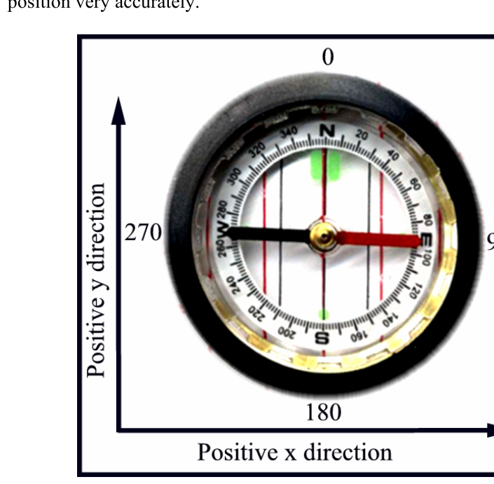
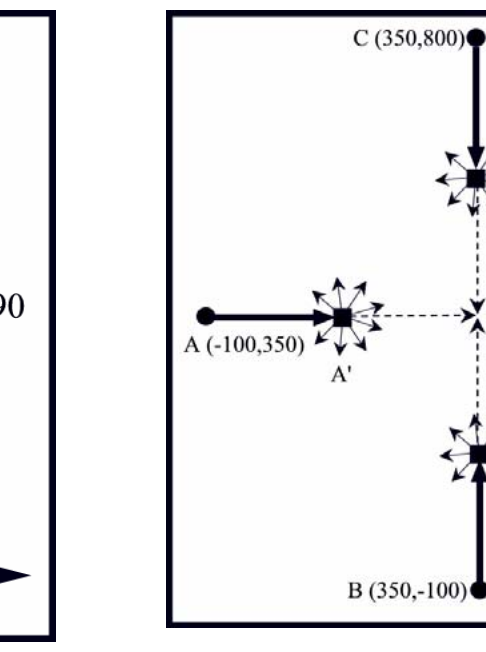

The 2004 28th Annual ICPC World Finals · Problem G
Global Positioning System (GPS) is a navigation system based on a set of satellites orbiting approximately 20,000 kilometers above the earth. Each satellite follows a known orbit and transmits a radio signal that encodes the current time. If a GPS-equipped vehicle has a very accurate clock, it can compare its own local time with the time encoded in the signals received from the satellites. Since radio signals propagate at a known rate, the vehicle can compute the distance between its current location and the location of the satellite when the signal was broadcast. By measuring its distance from several satellites in known orbits, a vehicle can compute its position very accurately.


You must write a simple “autopilot” program based on GPS navigation. To make the problem easier, we state it as a two-dimensional problem. In other words, you do not need to take into account the curvature of the earth or the altitude of the satellites. Furthermore, the problem uses speeds that are more appropriate for airplanes and sound waves than for satellites and radio waves.
Given a set of signals from moving sources, your program must compute the receiving position on the Cartesian plane. Then, given a destination point on the plane, your program must compute the compass heading required to go from the receiving position to the destination. All compass headings are stated in degrees. Compass heading 0 (North) corresponds to the positive y direction, and compass heading 90 (East) corresponds to the positive x direction, as shown in Figure 1.
The input consists of multiple data sets.
The first line of input in each data set contains an integer N (1 ≤ N ≤ 10), which is the number of signal sources in the set. This is followed by three floating point numbers: t, x, and y. Here, t denotes the exact local time when all the signals are received, represented in seconds after the reference time (time 0), and x and y represent the coordinates of the destination point on the Cartesian plane. Each of the next N lines contains four floating-point numbers that carry information about one signal source. The first two numbers represent the known position of the signal source on the Cartesian plane at the reference time. The third number represents the direction of travel of the signal source in the form of a compass heading D (0 ≤ D < 360). The fourth number is the time that is encoded in the signal—that is, the time when the signal was transmitted, represented in seconds after the reference time. The magnitudes of all numbers in the input file are less than 10000 and no floating-point number has more than 5 digits after the decimal point.
The last data set is followed by a line containing four zeros.
The unit distance in the coordinate space is one meter. Assume that each signal source is moving over the Cartesian plane at a speed of 100 meters per second and that the broadcast signal propagates at a speed of 350 meters per second. Due to inaccuracies in synchronizing clocks, assume that your distance calculations are accurate only to 0.1 meter. That is, if two points are computed to be within 0.1 meter of each other, you should treat them as the same point. There is also the possibility that a signal may have been corrupted in transmission, so the data received from multiple signals may be inconsistent.
For each trial, print the trial number followed by the compass heading from the receiving location to the destination, in degrees rounded to the nearest integer. Use the labeling as shown in the example output. If the signals do not contain enough information to compute the receiving location (that is, more than one position is consistent with the signals), print “Inconclusive.” If the signals are inconsistent (that is, no position is consistent with the signals), print “Inconsistent.” If the receiving location is within 0.1 meter of the destination, print “Arrived.” If the situation is Inconclusive or Inconsistent, then you do not need to consider the case Arrived.
Figure 2 on the previous page corresponds to the first sample input. The locations of the three satellites at time t = 0 are A (-100,350), B (350,-100) and C (350,800). The signals received by the GPS unit were transmitted at time t = 1.75, when the satellites were at locations A’, B’, and C’ (however, in general the signals received by the GPS unit might have been transmitted at different times). The signals from the three satellites converge at D at time t = 2.53571, which means D is the location of the receiving GPS unit. From point D, a compass course of 45 degrees leads toward the destination point of (1050, 1050).
3 2.53571 1050.0 1050.0 -100.0 350.0 90.0 1.75 350.0 -100.0 0.0 1.75 350.0 800.0 180.0 1.75 2 2.0 1050.0 1050.0 -100.0 350.0 90.0 1.0 350.0 -100.0 0.0 1.0 0 0 0 0
Trial 1: 45 degrees Trial 2: Inconclusive